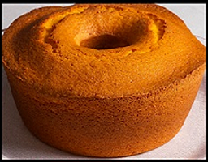
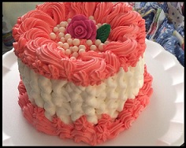
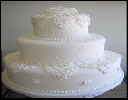
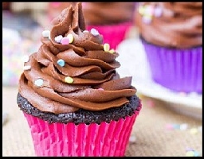

Serviviço com exelencia e profisssionalismo a um preço acessivel
faça seu pedido agora Bolos tradicionais: 
Esses são os bolos mais comuns que as pessoas costumam comprar para festas de
aniversário, casamentos e outras ocasiões especiais.
Eles vêm em uma variedade de sabores, incluindo baunilha, chocolate, morango, limão e muito mais.
Bolos Temáticos: 
São bolos que possuem uma decoração específica,
de acordo com algum tema escolhido pelo cliente como animais, personagens de filmes, super-heróis,
esportes entre outros.
Bolos de 1 andar, 2, 3 andares:  São bolos que variam em número de andares e são utilizados para decoração em casamentos, aniversários de 15 anos e outros eventos sociais.
Cupcakes: 
São pequenos bolinhos decorados, vendidos em embalagens individuais ou conjuntos,
também podem ter recheios variados e são uma opção divertida tanto para festas como para o dia a dia.
Maxbolos tem sede em São Paulo, Ela é conhecida por seus bolos saborosos e criativos, que são produzidos com ingredientes selecionados e processos rigorosos.
Seu objetivo é oferecer experiências inesquecíveis aos clientes, e ela tem uma equipe altamente capacitada para isso.
A empresa faz especialidades como bolos temáticos de aniversário, bolos personalizados de casamento, bolos para eventos corporativos e bolos para ocasiões especiais.
Oferecendo diversas opções de recheios e coberturas para atender a todas as necessidades de seus clientes, ela busca sempre superar expectativas e manter-se como uma referência no mercado de bolos artesanais.